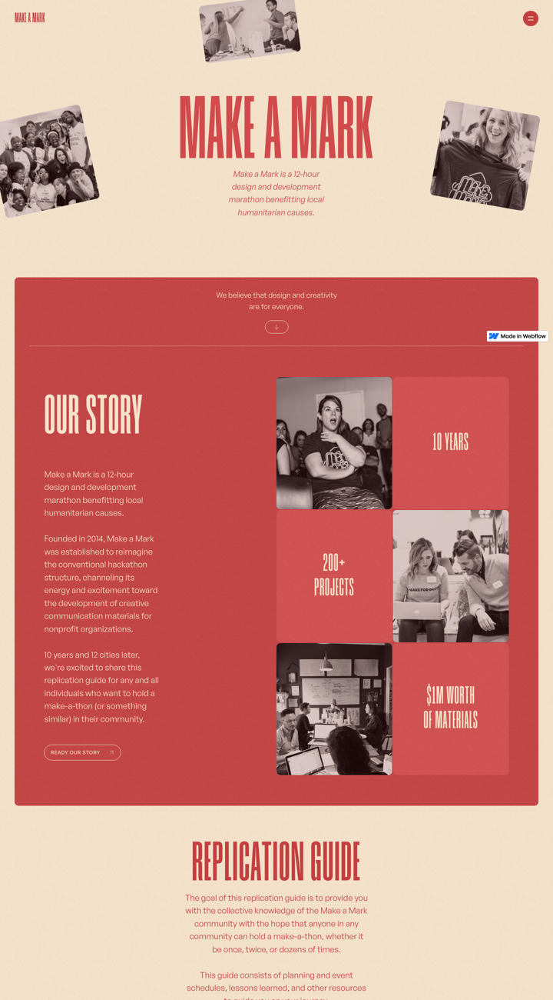
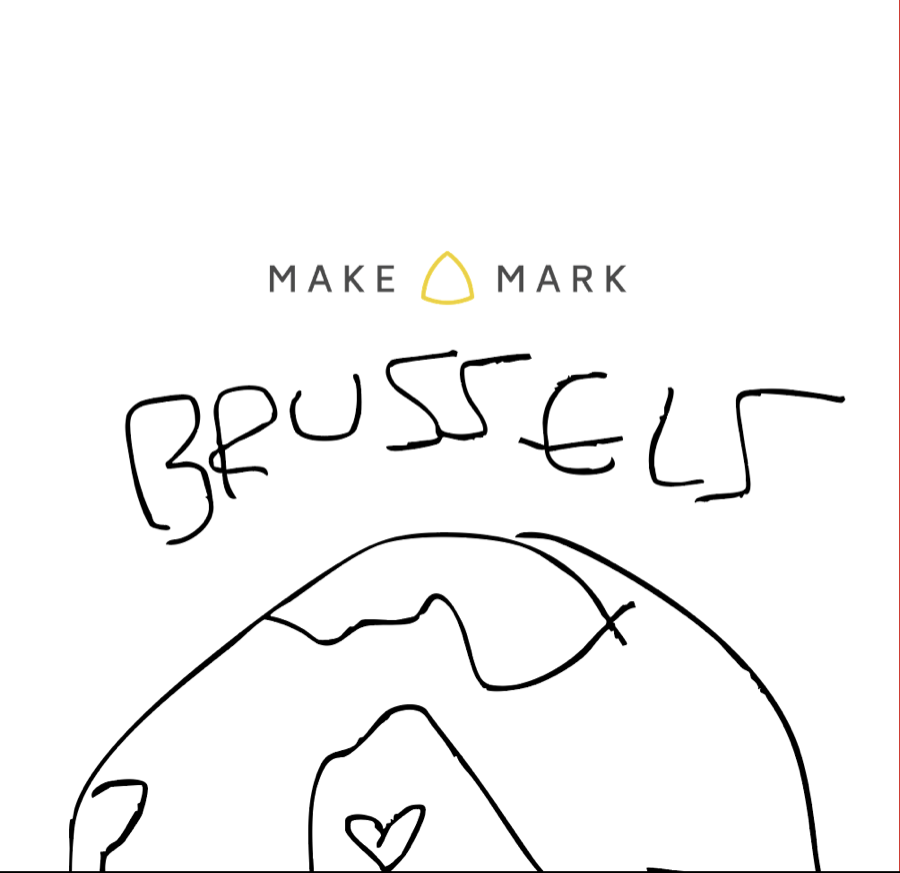
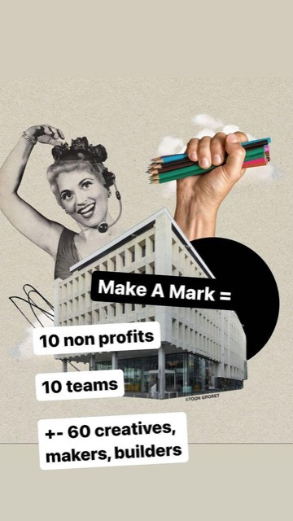
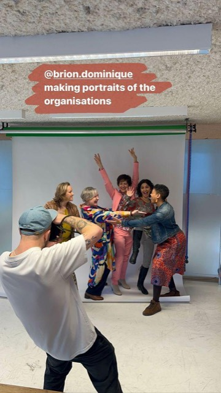
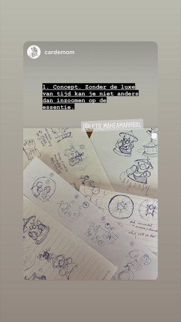
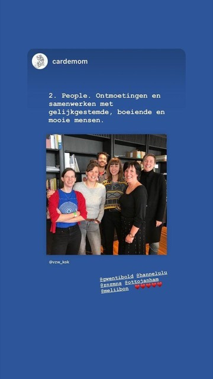
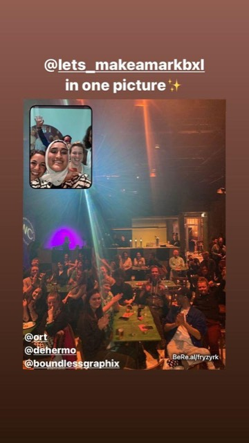
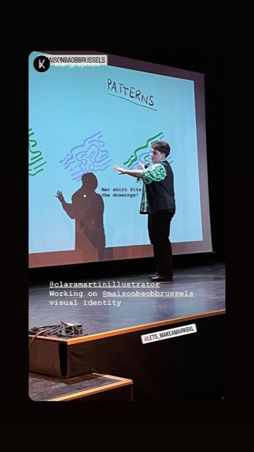
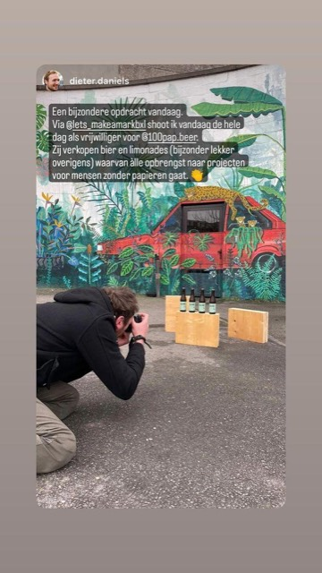
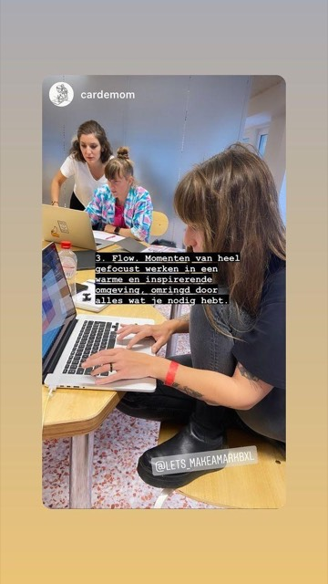

The brief: rebuild the Brussels site in Astro, in the look and feel of the international Make a Mark site, fonts from bunny.net, deployed on Netlify. Below are the raw inputs, four visual directions for the same Brussels content, and five smaller decisions. Each decision has a form. Pick, add a note if you want, press queue, then Send to Agent. Nothing gets built until you have picked.
Mockups are live HTML in the candidate fonts, not screenshots, so what you see is close to what Astro will render. Copy is taken verbatim from the current Google Doc. Photos are the nine Instagram stories embedded in that doc.

Cream and brick red only. Condensed uppercase display type for every heading, a plain sans for body. Black and white photos with a maroon tint, shown as tilted polaroids. Sections alternate cream and red rounded blocks. Numbered cards, pill buttons, a burger nav. Mood: bold, warm, handmade.
About 600 words in a Google Doc. One page, five parts:
There is no page for organisations that want to apply, no editions archive, no team section. The Bruzz article adds facts we can use: 12-hour marathon, about 10 organisations and 60 creatives per edition, Muntpunt venue, evening presentations at Beursschouwburg.







One hand-drawn logo: the international wordmark with a marker "Brussels" and a sketched globe. Nine Instagram stories from other people's accounts, 640 by 1138 pixels, with overlaid text. Good for mood, weak as hero material: low resolution, portrait only, and rights sit with the photographers. The international site has no logo file; its wordmark is live text.
Two colours carry the whole international site. Green is not part of it. It only appears in direction C below, as a per-edition colour.
The international site uses Humane (display) and General Sans (body). Neither is on bunny.net, which mirrors Google Fonts. Closest matches, rendered live:
Plus Jakarta Sans for body copy. Hundreds of creatives have made social-profits look fabulous.
Work Sans as the alternative. Hundreds of creatives have made social-profits look fabulous.
Big Shoulders Display is the closest to Humane: tall, condensed, and it comes in thin to black weights so the light stat numbers work too. Bebas Neue is punchier but single weight. Oswald is the safe, more generic option.

A make-a-thon where creatives give social-profits a day of design work. Eighth edition: Make a Mark for the Planet, 20 and 21 March 2026.
On Friday we all come together to plan and get to know each other. To make sure everyone can go in turbo creative mode Saturday. You'll spend the whole of Saturday, collaborating in a team, tackling a creative challenge for Klimaatzaak.
Applications are closed for 2026
What it is. The international homepage with Brussels words in it. Tilted duotone polaroids, red story block with stat tiles, the belief line, the pill button.
Gains. Instantly reads as part of the family. Cheapest to build and to keep consistent. Nothing to invent.
Costs. Nothing says Brussels except the word. The hand-drawn logo has no place. The duotone treatment hides the colourful, messy energy visible in the stories.
The eighth edition of our make-a-thon puts climate communication at the centre. Central case: Klimaatzaak. Friday evening 20 March and all day Saturday 21 March.
We all come together to plan and get to know each other, so everyone can go in turbo creative mode on Saturday.
Collaborate in a team on a creative challenge for Klimaatzaak. WiFi, food, drinks and great company provided.
We form the most effective teams and let you know end of January. Briefing with your organisation first week of March.
What it is. Direction A's skeleton, with the hand-drawn logo as the Brussels signature. Black marker becomes the third colour: one scribbled underline per page, handwritten asides, the arrows that are already in the copy. Photos stay warm cream polaroids but keep their colour.
Gains. Still unmistakably Make a Mark, but this one is from Brussels. The logo finally has a home. The marker matches the sketch photos and the "creative marathon" story. Cheap: two SVG scribbles and one handwriting font.
Costs. Handwriting is easy to overdo. Needs a rule: one scribble per section, never for body text. The logo is a 1000 pixel PNG, ideally redrawn as SVG.
Our central case is Klimaatzaak, a landmark climate case with impact far beyond Belgium. The climate crisis is pushed to the background. We need your brainpower to break through this trend.
In the past years hundreds of creatives have made social-profits look fabulous with a day of voluntary design work. Every year a new colour, the same red underneath.
Past editionsWhat it is. The site is an annual poster. The hero takes the colour of this year's theme, climate green for 2026, in giant type. Red and cream return below the fold and hold everything permanent: makers, organisations, FAQ. Next year the hero repaints.
Gains. Strongest reason to come back each year. Matches how the doc is already written: edition first, the rest second. Editions archive becomes a natural feature.
Costs. Drifts furthest from the family look; a first-time visitor sees green before red. Needs a colour decision every year, and a past-editions page with real content, which does not exist yet. Photos would need to be colour, not duotone.
Since 2016 makers, designers and developers have given 56 social-profits a day of their talent. Eighth edition: Make a Mark for the Planet, 20 and 21 March 2026.
Our central case is Klimaatzaak, a landmark climate case with impact far beyond Belgium. Friday evening 20 March and all day Saturday 21 March.
Applications are closed for 2026What it is. The event sells itself through the people in it. A strip of portrait photos in the Instagram story format leads; colour, not duotone. The edition sits second, in the red block. Type and layout stay within the family.
Gains. Shows the vibe rather than describing it, which is what the FAQ's Bruzz link is trying to do. Directly reuses the format the community already produces every edition.
Costs. Lives or dies on photo quality and rights. The current nine are low resolution with baked-in text from other accounts. Needs a small photo collection per edition, which is an organisational ask, not a design one.
A is safe but anonymous. C and D are ideas about content that does not exist yet: an editions archive, a photo library. B uses only what is already on the table, the family look plus the one asset that is truly Brussels, and it leaves the door open: the edition colour from C can be added later as an accent, and the stories strip from D can slot into the Instagram section once there are good photos. If you prefer C or D, the honest answer is that the site will launch with placeholders in those spots.
Home holds everything: hero, for makers, for organisations, past organisations, FAQ, organisers. Nav links scroll. Matches the international site and the doc. One extra route, /editions/2026, only if direction C is chosen.
Home is the edition pitch. Separate pages for Makers, Organisations (how to apply, what to expect, who came before), and Past editions. FAQ and organisers stay on home.
Content lives in content collections: one file per edition, one JSON of past organisations, one markdown for FAQ. Sections are components. Switching from one page to several later is a routing change, not a rewrite. So this choice is not permanent.
Hero: "Make a Mark for the Planet", dates, application status. Directly under it, one sentence on what Make a Mark Brussels is, then the stats. This is what mockups B, C and D do.
Fits a site that is mostly visited in the weeks around the call for makers. The status pill (open, closed, selected) is the most important element on the page, so it sits at the top.
Hero: "Make a Mark Brussels" wordmark and the belief line, as in mockup A. The edition is a red banner or a pinned card just below.
Better for the eleven months a year when there is no call. Weaker when there is one.
Whatever you choose, the status becomes a field in the edition file: open, closed, selected, done. The hero pill, its link and its wording follow from that one value, so the organisers change one line, not the page.
Every photo grayscale with a red multiply layer. Hides low quality and mismatched sources, which is a real advantage with the current material. Loses the colour and the pinned text.
Honest and lively, but the cream and red palette then competes with whatever colour is in the photo. Needs curated photos.
Duotone for photos that sit inside red blocks and hero polaroids, where they are texture. Colour for the Instagram strip, where they are content. One CSS class decides.
Plus Jakarta Sans. Hundreds of creatives have made social-profits look fabulous with a day of voluntary design work.
Big Shoulders Display + Plus Jakarta Sans. Closest to Humane and General Sans, with thin weights for the big numbers.
Work Sans. Hundreds of creatives have made social-profits look fabulous with a day of voluntary design work.
Bebas Neue + Work Sans. More poster, less refined. Single weight, so stat numbers are as heavy as titles.
Plus Jakarta Sans. Hundreds of creatives have made social-profits look fabulous with a day of voluntary design work.
Oswald + Plus Jakarta Sans. Safest rendering at small sizes, but reads more generic and less like the international site.
The doc is English only. Brussels is bilingual and the case is named in three languages. The international site is English.
Recommendation: launch in English, but keep every string in the content files so French and Dutch can be added as translated files later without touching components. Astro's i18n routing can be turned on at that point.
Today the organisers edit a Google Doc. After the move, someone has to change the edition text, the application status and the list of organisations once or twice a year.
Recommendation: markdown and JSON files in the repository, deployed by Netlify on every push. You edit them, or the organisers edit through GitHub's web editor. No CMS to maintain. Keep the FAQ joke and answer it honestly: "Not any more. It was, for seven years."
| Question | Why it matters | Assumed for now |
|---|---|---|
| Are there better photos than the nine Instagram stories, and do we have permission to use them? | Decides how much any direction can lean on photography. | Use the nine as placeholders, swap later. |
| How do makers apply when applications are open? A Google Form link, an email, a form on the site? | Decides whether the status pill links out or opens a Netlify form. | Link to an external form URL stored in the edition file. |
| Should organisations be able to apply on the site? | Creates the missing "for organisations" section. | A short section with the email as the call to action. |
| Which domain? Is there an existing one? | Netlify config and the wordmark in the nav. | Placeholder until known. |
| Should the logo be redrawn as SVG, and by whom? | Direction B depends on the hand-drawn mark holding up at any size. | Trace the PNG to SVG during the build. |
| Is 2016 the first edition? | Used in the "since" line of directions C and D. | Eighth edition in 2026; Bruzz said five years in 2023; so 2018 or 2019 with a gap. Verify. |
This page. You pick directions. Done in this session.
One design document: chosen direction, page structure, content model, tokens, components, Netlify setup. Written from your picks, reviewed by you. Same session as this, after your answers.
An implementation plan with small tasks: scaffold, tokens and fonts, content collections, each section as a component, images, deploy. New session, Sonnet.
Sonnet subagents execute tasks in parallel where independent, one screenshot pass at the end against the mockup. New session.
Netlify site linked to the repo, build command and redirects in netlify.toml, custom domain when you have it.
Fixed regardless of your picks: Astro with static output, fonts self-served via fonts.bunny.net, images through Astro's image pipeline, no client JavaScript beyond the FAQ accordion and the mobile nav, content in collections so a new edition is a new file.